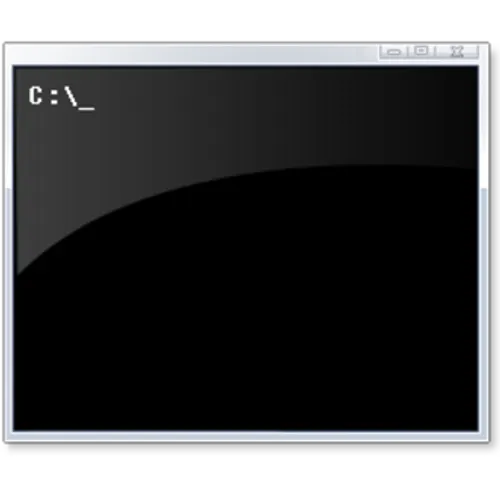

Windows CMD Beginner
Legacy Command Line Engine — mastering Batch scripting, environment configurations, errorlevel routing, file handling, and core Windows system sub-utilities.
Table of Contents
Batch Script Entry & Echo Control
Windows Command Prompt automation relies on text files saved with the .bat or .cmd extensions. By default, the terminal echoes back every instruction line before executing it. To suppress this visual clutter and clean up the viewport console output, scripts open with an explicit directive.
@echo off :: The double colon serves as a standard comment line entry in batch scripts echo Command Prompt execution interface ready.
File System Navigation (Drives & Paths)
CMD utilizes backslashes (\) for system paths. Unlike modern systems, typing cd to shift directories across different hardware or partition volumes will fail unless you include a specific flag to unlock cross-volume stepping.
File Management & Directory Operations
CMD provides dedicated tools for copying, moving, and removing operational file payloads. For robust, enterprise-grade file replication tasks, Windows includes a powerful sub-engine called **Robocopy**.
mkdir "D:\ProjectData\Logs" :: Instantiates new structural folder pathways copy log.txt D:\ProjectData\Logs\ :: Copies standard file components to targets del /f /q old_cache.tmp :: Force fully deletes files silently without prompt loops rmdir /s /q D:\ProjectData\Logs :: Recursively wipes out entire directory subtrees :: High-performance mirror synchronization using Robocopy: robocopy C:\Src D:\Backup /mir /mt:32
Environment Variables (%VAR%)
Variables are allocated using the `set` command and referenced by wrapping the token name inside percentage symbols (%VAR%). **CRITICAL ALLOCATION RULE:** You must never add trailing or leading spaces around the equation operator (=), as CMD will literally append those whitespaces directly into the key or value string.
set DEVELOPER_NAME=IvanVidussi echo Active engineer node: %DEVELOPER_NAME% :: Halts console execution flow to explicitly capture arbitrary keyboard input fields: set /p USER_TOKEN=Input security hash connection string: echo Token recorded: %USER_TOKEN%
Conditional Flow & Errorlevels
Conditional structures evaluate runtime equations. Upon completing execution, every system application leaves an integer exit code called an **ERRORLEVEL** (where 0 signifies successful execution, and any non-zero value indicates an error).
ping -n 1 127.0.0.1 >nul if %errorlevel% equ 0 ( echo Loopback link evaluation returned stable matrix metrics. ) else ( echo Link validation tracking failed. ) :: Operator tokens: EQU (Equal) · NEQ (Not Equal) · GTR (Greater Than) · LEQ (Less or Equal)
The Batch Loop Paradigm (FOR)
The FOR construct inside CMD uses a specialized syntax. When evaluated directly within an active terminal console shell line, loop variables use a single percent symbol (%i). However, inside a reusable batch script file (.bat), they require a double prefix (%%i).
:: Loops through a sequential scalar configuration progression index range: for /L %%i in (1,1,3) do ( echo Executing backup sync task sequence number: %%i ) :: Scans directory targets matching explicit file extension arrays: for %%f in (*.txt) do ( echo Target active logs cataloged: %%f )
Standard Redirections & Piping
Output streams can be suppressed or captured. You can append text blocks to logs, redirect output streams, or isolate specific matches within unstructured string arrays using the **findstr** engine.
echo Initial deployment tracking line allocation. > system.log :: Overwrites target completely echo Append auxiliary runtime monitoring track. >> system.log :: Appends data line entries :: Intercepts active process list streams and filters exclusively for specific application tasks: tasklist | findstr /i "node.exe"
/dev/null. Instead, Windows uses a special, dedicated internal pseudo-device keyword named nul (e.g., command >nul 2>&1).
Network Diagnostics & Administration Utilities
Despite its age, the Command Prompt remains an effective tool for running low-level network diagnostic utilities and manipulating advanced system configurations directly via specialized administrative utilities.
ipconfig /flushdns :: Purges the active Windows DNS resolver cache instantly netstat -ano :: Lists active network sockets along with their owning process PIDs :: Advanced execution configuration contexts (Requires Elevated Administrator Privileges): :: netsh interface ipv4 show addresses :: diskpart